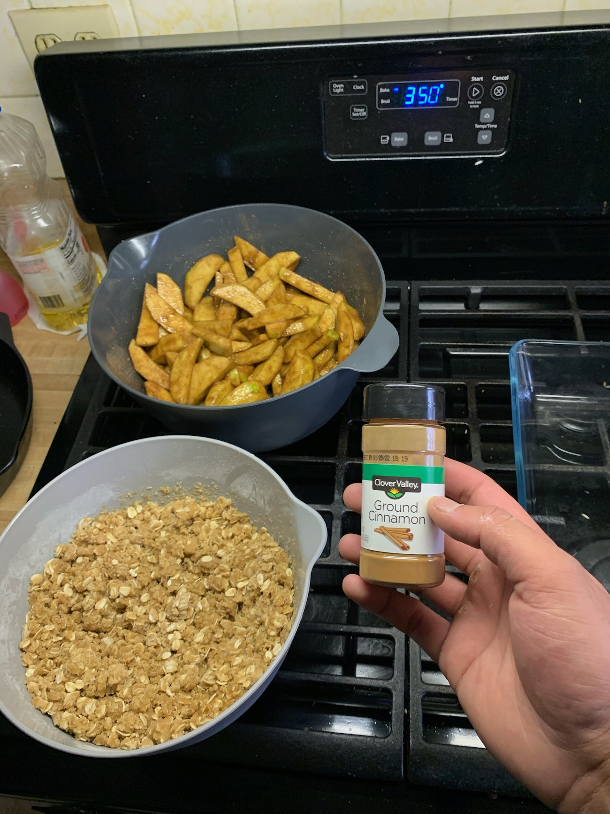

Food Corner
My successes (and experiments) in the kitchen! I love baking, cooking, and generally making a fool of myself + getting flour everywhere. Enjoy this collection.
Cooking
'zza from the grill
We've had one, yes. What about second breakfast?" - Pippin
Kaiserschmarrn (look it up!)
Baking
Peanut Butter Cups
Strawberry Rhubarb Pie
Never skimp on the cinnamon." - Anonymous
Mini Carrot Cakes.

#1 Ingredient!!
Chocolate Lava Cake!
Lemon Blueberry Loaf